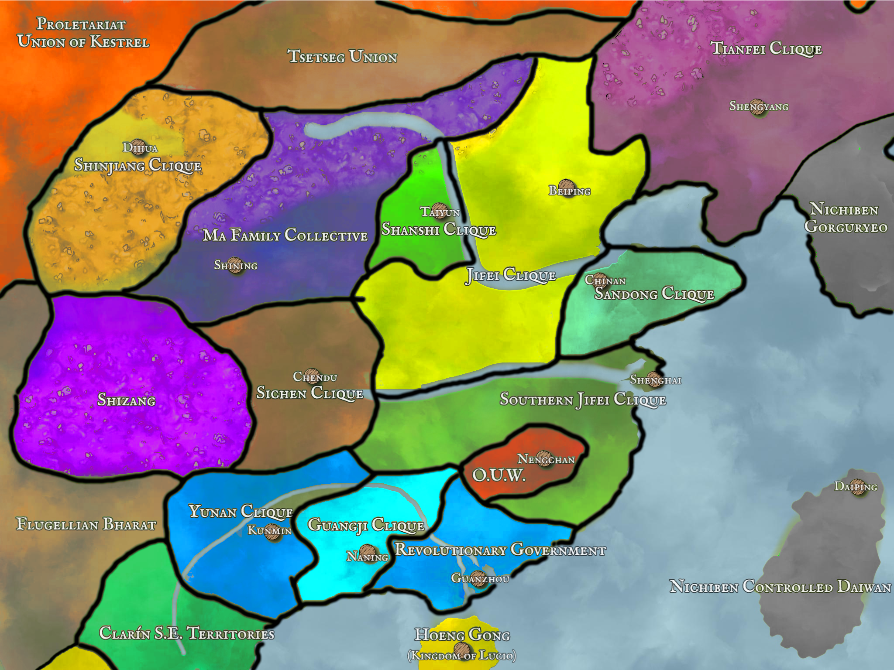

Osmanthia, an empire long united, must divide. The year 1511 marked the end of the Long Dynasty, led by the child emperor Shuantong, and with its end came the Republic of Osmanthia. For a few months, peace flowed freely from the president’s chalice. However with the exile of the president Sun Yishan, the Republic came crashing down. Now, as military strongmen consolidate their own realms, chaos reigns supreme. With a shout of glory and a gun raised to the sky, may your jade carved destiny last a thousand years. Who will reunite Osmanthia?